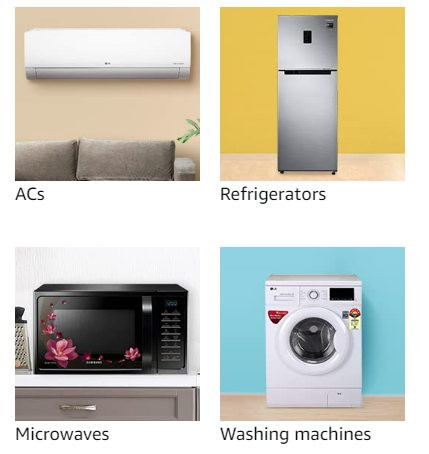
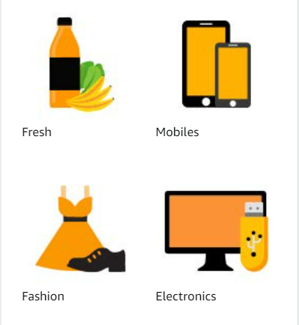

Home
Shopping
Entertainment
Internet-Service
Welcome to MyWebsite
You Can Explore other useful websities from here
Shopping
1 / 3

Caption Text
2 / 3

Caption Two
3 / 3
Caption Three
❮
❯
Entertainment
1 / 3
Amazon
2 / 3
Netflix
3 / 3
Zee5
❮
❯
Internet-Service
1 / 3
Vodafone
2 / 3
Jio
3 / 3
airtel
❮
❯